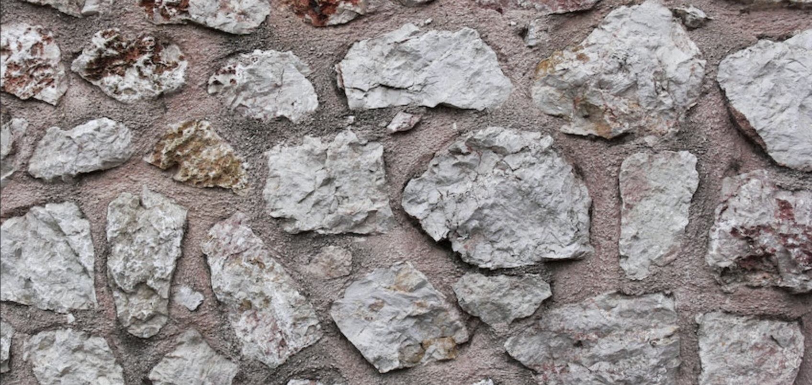

Consultations
Meet with one of our stone advisors in person or over the phone to help answer your questions. There are somethings you can do to help the advisors answer your questions with specific answers. Find out the size of the are that needs work. Have a general idea of what you want the finished product to look like. Google some pictures for examples of finished product. Take a picture of your home and the area that needs work done. Receive an accurate estimate from one of our advisors.Meet with one of our consultants by emailing groundandup@gmail.com